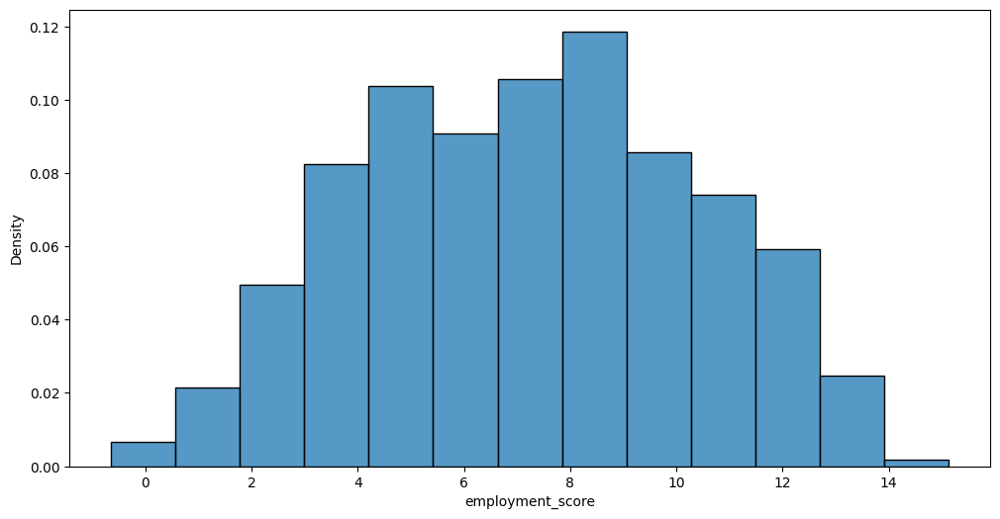
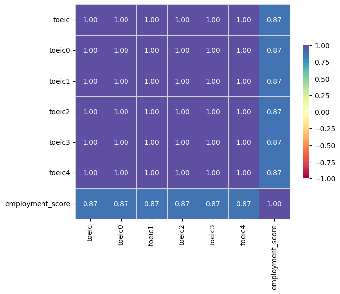
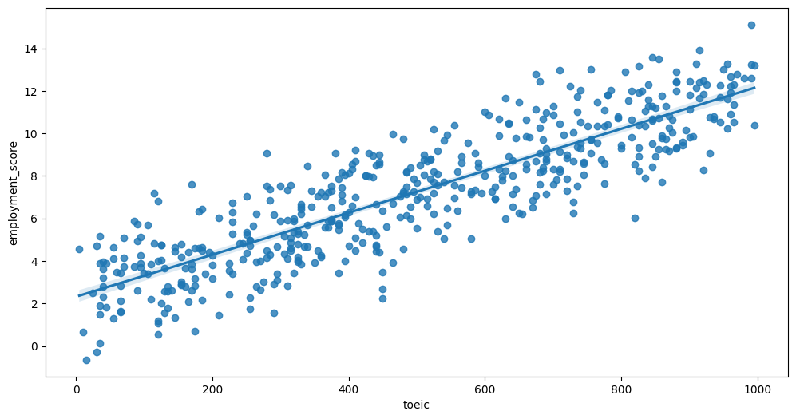
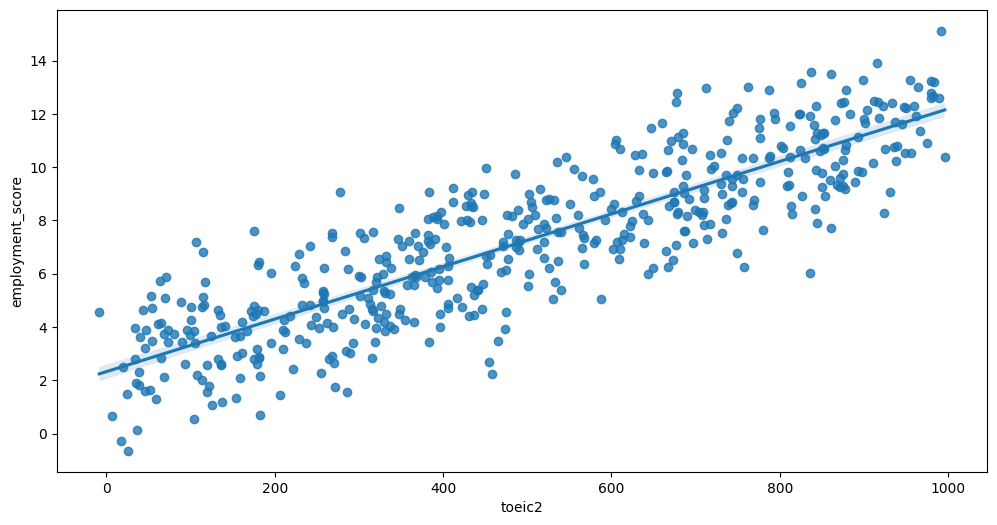
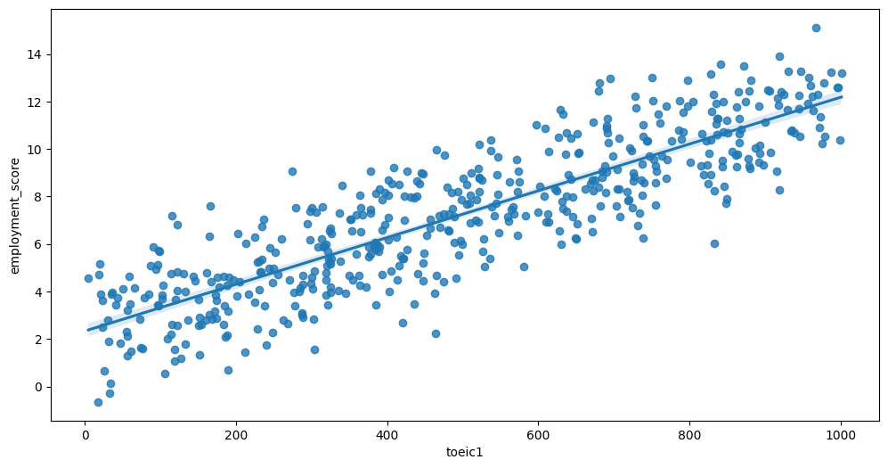

#!pip install autogluon.eda13wk-53: 취업(다중공선성) / 자료분석(Autogluon)
1. 강의영상
2. Imports
import numpy as np
import pandas as pd
import matplotlib.pyplot as plt
import seaborn as sns
#---#
from autogluon.tabular import TabularPredictor
import autogluon.eda.auto as auto
#---#
import warnings
warnings.filterwarnings('ignore')3. Data
np.random.seed(43052)
df_train = pd.read_csv("https://raw.githubusercontent.com/guebin/MP2023/main/posts/employment_multicollinearity.csv")
df_train['employment_score'] = df_train.gpa * 1.0 + df_train.toeic* 1/100 + np.random.randn(500)
df_train = df_train.iloc[:,:8]
df_train| employment_score | gpa | toeic | toeic0 | toeic1 | toeic2 | toeic3 | toeic4 | |
|---|---|---|---|---|---|---|---|---|
| 0 | 1.784955 | 0.051535 | 135 | 129.566309 | 133.078481 | 121.678398 | 113.457366 | 133.564200 |
| 1 | 10.789671 | 0.355496 | 935 | 940.563187 | 935.723570 | 939.190519 | 938.995672 | 945.376482 |
| 2 | 8.221213 | 2.228435 | 485 | 493.671390 | 493.909118 | 475.500970 | 480.363752 | 478.868942 |
| 3 | 2.137594 | 1.179701 | 65 | 62.272565 | 55.957257 | 68.521468 | 76.866765 | 51.436321 |
| 4 | 8.650144 | 3.962356 | 445 | 449.280637 | 438.895582 | 433.598274 | 444.081141 | 437.005100 |
| ... | ... | ... | ... | ... | ... | ... | ... | ... |
| 495 | 9.057243 | 4.288465 | 280 | 276.680902 | 274.502675 | 277.868536 | 292.283300 | 277.476630 |
| 496 | 4.108020 | 2.601212 | 310 | 296.940263 | 301.545000 | 306.725610 | 314.811407 | 311.935810 |
| 497 | 2.430590 | 0.042323 | 225 | 206.793217 | 228.335345 | 222.115146 | 216.479498 | 227.469560 |
| 498 | 5.343171 | 1.041416 | 320 | 327.461442 | 323.019899 | 329.589337 | 313.312233 | 315.645050 |
| 499 | 6.505106 | 3.626883 | 375 | 370.966595 | 364.668477 | 371.853566 | 373.574930 | 376.701708 |
500 rows × 8 columns
4. 적합
# step1 -- pass
# step2
predictr = TabularPredictor(label='employment_score')
# step3
predictr.fit(df_train)
# step4
yhat = predictr.predict(df_train)No path specified. Models will be saved in: "AutogluonModels/ag-20231201_112421/"
Beginning AutoGluon training ...
AutoGluon will save models to "AutogluonModels/ag-20231201_112421/"
AutoGluon Version: 0.8.2
Python Version: 3.10.13
Operating System: Linux
Platform Machine: x86_64
Platform Version: #26~22.04.1-Ubuntu SMP PREEMPT_DYNAMIC Thu Jul 13 16:27:29 UTC 2
Disk Space Avail: 248.36 GB / 490.57 GB (50.6%)
Train Data Rows: 500
Train Data Columns: 7
Label Column: employment_score
Preprocessing data ...
AutoGluon infers your prediction problem is: 'regression' (because dtype of label-column == float and many unique label-values observed).
Label info (max, min, mean, stddev): (15.12090627137731, -0.6447161480491369, 7.2271, 3.11598)
If 'regression' is not the correct problem_type, please manually specify the problem_type parameter during predictor init (You may specify problem_type as one of: ['binary', 'multiclass', 'regression'])
Using Feature Generators to preprocess the data ...
Fitting AutoMLPipelineFeatureGenerator...
Available Memory: 125968.81 MB
Train Data (Original) Memory Usage: 0.03 MB (0.0% of available memory)
Inferring data type of each feature based on column values. Set feature_metadata_in to manually specify special dtypes of the features.
Stage 1 Generators:
Fitting AsTypeFeatureGenerator...
Stage 2 Generators:
Fitting FillNaFeatureGenerator...
Stage 3 Generators:
Fitting IdentityFeatureGenerator...
Stage 4 Generators:
Fitting DropUniqueFeatureGenerator...
Stage 5 Generators:
Fitting DropDuplicatesFeatureGenerator...
Types of features in original data (raw dtype, special dtypes):
('float', []) : 6 | ['gpa', 'toeic0', 'toeic1', 'toeic2', 'toeic3', ...]
('int', []) : 1 | ['toeic']
Types of features in processed data (raw dtype, special dtypes):
('float', []) : 6 | ['gpa', 'toeic0', 'toeic1', 'toeic2', 'toeic3', ...]
('int', []) : 1 | ['toeic']
0.0s = Fit runtime
7 features in original data used to generate 7 features in processed data.
Train Data (Processed) Memory Usage: 0.03 MB (0.0% of available memory)
Data preprocessing and feature engineering runtime = 0.03s ...
AutoGluon will gauge predictive performance using evaluation metric: 'root_mean_squared_error'
This metric's sign has been flipped to adhere to being higher_is_better. The metric score can be multiplied by -1 to get the metric value.
To change this, specify the eval_metric parameter of Predictor()
Automatically generating train/validation split with holdout_frac=0.2, Train Rows: 400, Val Rows: 100
User-specified model hyperparameters to be fit:
{
'NN_TORCH': {},
'GBM': [{'extra_trees': True, 'ag_args': {'name_suffix': 'XT'}}, {}, 'GBMLarge'],
'CAT': {},
'XGB': {},
'FASTAI': {},
'RF': [{'criterion': 'gini', 'ag_args': {'name_suffix': 'Gini', 'problem_types': ['binary', 'multiclass']}}, {'criterion': 'entropy', 'ag_args': {'name_suffix': 'Entr', 'problem_types': ['binary', 'multiclass']}}, {'criterion': 'squared_error', 'ag_args': {'name_suffix': 'MSE', 'problem_types': ['regression', 'quantile']}}],
'XT': [{'criterion': 'gini', 'ag_args': {'name_suffix': 'Gini', 'problem_types': ['binary', 'multiclass']}}, {'criterion': 'entropy', 'ag_args': {'name_suffix': 'Entr', 'problem_types': ['binary', 'multiclass']}}, {'criterion': 'squared_error', 'ag_args': {'name_suffix': 'MSE', 'problem_types': ['regression', 'quantile']}}],
'KNN': [{'weights': 'uniform', 'ag_args': {'name_suffix': 'Unif'}}, {'weights': 'distance', 'ag_args': {'name_suffix': 'Dist'}}],
}
Fitting 11 L1 models ...
Fitting model: KNeighborsUnif ...
-1.5764 = Validation score (-root_mean_squared_error)
0.01s = Training runtime
0.01s = Validation runtime
Fitting model: KNeighborsDist ...
-1.5604 = Validation score (-root_mean_squared_error)
0.01s = Training runtime
0.01s = Validation runtime
Fitting model: LightGBMXT ...
-0.9448 = Validation score (-root_mean_squared_error)
0.33s = Training runtime
0.0s = Validation runtime
Fitting model: LightGBM ...
-0.9643 = Validation score (-root_mean_squared_error)
0.18s = Training runtime
0.0s = Validation runtime
Fitting model: RandomForestMSE ...
-0.9278 = Validation score (-root_mean_squared_error)
0.3s = Training runtime
0.04s = Validation runtime
Fitting model: CatBoost ...
-0.9398 = Validation score (-root_mean_squared_error)
0.3s = Training runtime
0.0s = Validation runtime
Fitting model: ExtraTreesMSE ...
-0.9428 = Validation score (-root_mean_squared_error)
0.3s = Training runtime
0.02s = Validation runtime
Fitting model: NeuralNetFastAI ...
-0.9448 = Validation score (-root_mean_squared_error)
0.7s = Training runtime
0.01s = Validation runtime
Fitting model: XGBoost ...
-0.9637 = Validation score (-root_mean_squared_error)
0.2s = Training runtime
0.0s = Validation runtime
Fitting model: NeuralNetTorch ...
-0.9001 = Validation score (-root_mean_squared_error)
2.4s = Training runtime
0.01s = Validation runtime
Fitting model: LightGBMLarge ...
-0.981 = Validation score (-root_mean_squared_error)
0.31s = Training runtime
0.0s = Validation runtime
Fitting model: WeightedEnsemble_L2 ...
-0.8742 = Validation score (-root_mean_squared_error)
0.19s = Training runtime
0.0s = Validation runtime
AutoGluon training complete, total runtime = 5.53s ... Best model: "WeightedEnsemble_L2"
TabularPredictor saved. To load, use: predictor = TabularPredictor.load("AutogluonModels/ag-20231201_112421/")5. 해석 및 시각화
A. y의 분포, (X,y)의 관계 시각화
auto.target_analysis(
train_data=df_train,
label='employment_score',
fit_distributions=False
)Target variable analysis
| count | mean | std | min | 25% | 50% | 75% | max | dtypes | unique | missing_count | missing_ratio | raw_type | special_types | |
|---|---|---|---|---|---|---|---|---|---|---|---|---|---|---|
| employment_score | 500 | 7.227104 | 3.115979 | -0.644716 | 4.695513 | 7.281178 | 9.548811 | 15.120906 | float64 | 500 | float |

Target variable correlations
train_data - spearman correlation matrix; focus: absolute correlation for employment_score >= 0.5

Feature interaction between toeic/employment_score in train_data

Feature interaction between toeic2/employment_score in train_data

Feature interaction between toeic4/employment_score in train_data

Feature interaction between toeic3/employment_score in train_data

Feature interaction between toeic1/employment_score in train_data

Feature interaction between toeic0/employment_score in train_data

B. 중요한 설명변수
auto.quick_fit(
train_data=df_train,
label='employment_score',
show_feature_importance_barplots=True
)No path specified. Models will be saved in: "AutogluonModels/ag-20231201_112654/"Model Prediction for employment_score
Using validation data for Test points

Model Leaderboard
| model | score_test | score_val | pred_time_test | pred_time_val | fit_time | pred_time_test_marginal | pred_time_val_marginal | fit_time_marginal | stack_level | can_infer | fit_order | |
|---|---|---|---|---|---|---|---|---|---|---|---|---|
| 0 | LightGBMXT | -1.012202 | -0.979194 | 0.001505 | 0.000941 | 0.187162 | 0.001505 | 0.000941 | 0.187162 | 1 | True | 1 |
Feature Importance for Trained Model
| importance | stddev | p_value | n | p99_high | p99_low | |
|---|---|---|---|---|---|---|
| gpa | 1.020679 | 0.095581 | 0.000009 | 5 | 1.217483 | 0.823876 |
| toeic0 | 0.266908 | 0.043618 | 0.000083 | 5 | 0.356718 | 0.177098 |
| toeic2 | 0.252605 | 0.038863 | 0.000065 | 5 | 0.332626 | 0.172585 |
| toeic | 0.241941 | 0.043093 | 0.000116 | 5 | 0.330669 | 0.153212 |
| toeic3 | 0.161979 | 0.035012 | 0.000246 | 5 | 0.234070 | 0.089888 |
| toeic1 | 0.158796 | 0.040579 | 0.000470 | 5 | 0.242350 | 0.075242 |
| toeic4 | 0.136791 | 0.037064 | 0.000588 | 5 | 0.213106 | 0.060476 |

Rows with the highest prediction error
Rows in this category worth inspecting for the causes of the error
| gpa | toeic | toeic0 | toeic1 | toeic2 | toeic3 | toeic4 | employment_score | employment_score_pred | error | |
|---|---|---|---|---|---|---|---|---|---|---|
| 55 | 0.200267 | 450 | 450.310311 | 464.340472 | 458.213429 | 456.215452 | 448.932120 | 2.234912 | 4.809618 | 2.574706 |
| 8 | 4.191552 | 25 | 29.000939 | 22.725391 | 19.529454 | 35.896321 | 24.151228 | 2.514707 | 5.069639 | 2.554931 |
| 491 | 1.754276 | 425 | 428.686989 | 439.377437 | 446.630603 | 439.109681 | 423.056878 | 8.008441 | 5.771637 | 2.236804 |
| 144 | 2.013480 | 520 | 519.674312 | 521.390587 | 531.847782 | 511.375625 | 525.305439 | 8.755093 | 6.543661 | 2.211432 |
| 118 | 3.585276 | 675 | 679.425199 | 680.429579 | 677.878530 | 674.812300 | 672.177564 | 12.785551 | 10.599931 | 2.185620 |
| 469 | 1.969145 | 5 | 3.785864 | 4.575646 | -8.358037 | 1.071854 | 7.253616 | 4.552622 | 2.385054 | 2.167567 |
| 403 | 1.678080 | 70 | 53.993037 | 65.691879 | 65.135837 | 58.510651 | 51.307683 | 4.136691 | 2.040128 | 2.096563 |
| 75 | 0.564461 | 795 | 799.270794 | 791.212118 | 803.426181 | 805.178974 | 803.979166 | 10.702375 | 8.615296 | 2.087079 |
| 293 | 4.364023 | 990 | 973.878219 | 966.687506 | 991.332887 | 987.137768 | 989.321286 | 15.120906 | 13.106976 | 2.013931 |
| 137 | 4.248511 | 115 | 106.422018 | 114.653052 | 106.830406 | 124.361062 | 118.754414 | 7.183716 | 5.199379 | 1.984337 |
C. 관측치별 해석
df_train.iloc[[1]]| employment_score | gpa | toeic | toeic0 | toeic1 | toeic2 | toeic3 | toeic4 | |
|---|---|---|---|---|---|---|---|---|
| 1 | 10.789671 | 0.355496 | 935 | 940.563187 | 935.72357 | 939.190519 | 938.995672 | 945.376482 |
predictr.predict(df_train.iloc[[1]])1 10.539183
Name: employment_score, dtype: float32auto.explain_rows(
train_data = df_train,
model = predictr,
rows = df_train.iloc[[1]],
display_rows = False,
plot='waterfall'
)